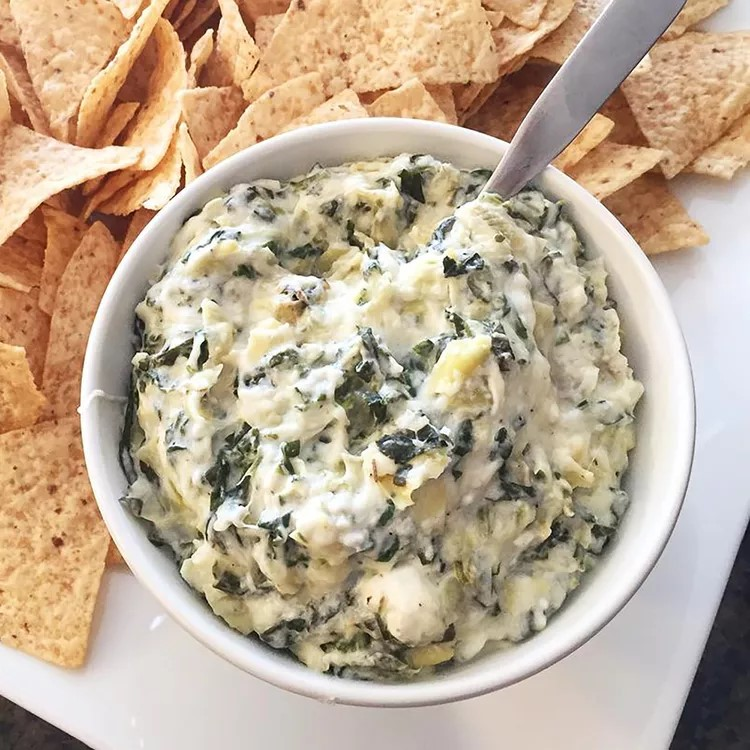

Spinach Artichoke Dip

This spinach artichoke dip is delicious. It's so cheesy and fragrant. If you don't like artichokes, don't worry — you'll never know they're in there! My only question is: Is it okay to eat it with a spoon right out of the dish?
Ingredients
- 2 cups spinach, thinly sliced
- 1 medium artichoke, peeled and sliced
- 1/4 cup chopped fresh parsley
- 1/4 cup chopped fresh basil
- 1/2 cup grated Parmesan cheese
- 1/2 cup grated mozzarella cheese
- 1/2 cup grated feta cheese (optional)
- 1/4 cup heavy cream
- 1 tablespoon olive oil
- 1/2 teaspoon dried oregano
- 1/2 teaspoon dried thyme
Instructions
- In a large bowl, combine the spinach, artichoke, parsley, basil, and Parmesan cheese. Season with salt and pepper to taste.
- In a small bowl, whisk together the heavy cream, olive oil, oregano, and thyme. Add the spinach mixture to the bowl and whisk until smooth.
- Serve the dip on top of your favorite pasta or salad.